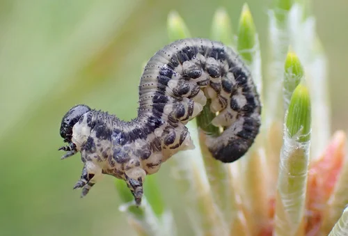

Clusters of striped larvae strip older pine needles
European pine sawfly larvae feed together, so a single branch may look bare while a nearby branch remains green. The age of the needles left behind helps interpret the pattern. Inspect each section of the shoot before assuming that the entire growing tip has died.

Where to look
Look at the age of the needles missing from a pine shoot. The previous season’s needles may be stripped while the newly extending shoot remains green. Compare an occupied branch with one where feeding has finished. Small groups are easier to overlook when some older needles survive, whereas completely bare branch sections may no longer have larvae available for identification.
What confirms it
Inspect a partly eaten branch for groups of gray-green larvae with dark heads and lengthwise stripes. Several may lift their front ends together when disturbed.
Similar damage
Needle disease can also thin an older section of branch. Chewed stubs and a live group of larvae support sawfly feeding.
What to do
On reachable branches remove the feeding group by hand or knock it into a container. Avoid removing a healthy terminal bud simply to clear old needle damage.
Follow-up
Follow the same branch toward its tip to see whether current growth is intact. Check adjacent pines for colonies before they finish feeding.
Inspect both ends of an affected shoot. A bare stretch below an intact new tip can remain obvious for the rest of the season. Direct hand removal toward partly eaten older needles where larvae are still gathered; cutting away the green tip would also remove healthy growth.